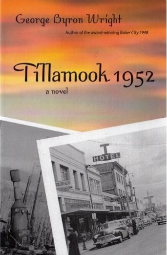

George Byron Wright, Tillamook 1952 (2006)
Content warning:
Death, discrimination and bigotry (anti-Asian), mental illness, natural disaster, suicide, sexual content, war
Synopsis
Lou Kallander was born and raised in Tillamook, and now works in Portland. His mother, Iris Kallander, has recently passed away, and he stays in Tillamook for the funeral. Upon going through her items, his sister responsible for the will and talking with her lawyer, Lou finds his mother's diary entries, further cementing her love for her younger brother, and Lou's uncle, Verlin.
Lou is determined to get to the bottom of how Verlin died, contacting many leads from Verlin's last year of his life. You should expect to find many tense interactions. For instance, Lou and his sister often don't get along. She and much of the town want to put to rest the near-20-year-old story of uncle Verlin accidentally fatally shooting himself.
Beyond just interactions, there are many surprises in the story, and in each chapter and page a new conversation or discovery is unfolding. Lou begins his mystery-finding by first exploring his childhood home that the kids have recently sold to a townswoman.
Lou has not yet found "the one," and romance also is a notable subplot of the story.
Essay
Given the title of the book, Tillamook on a town level is the focus of the story. Tillamook is in reality a coastal town with limited national popularity. This book adds to Oregon literature by imagining a Tillamook where the main character Lou directs himself throughout his family and friends that are still there, and former and current townspeople. I chose this text because of my unfamiliarity of Tillamook in media beyond the creamery. I thought a popular coastal town, with a notable event of the Fire in 1933, was worth portraying an Oregon town's culture and the people's daily lives there from a Tillamook-raised Portland-based character.
Lou's interactions with townfolk cover the most ground of, and are the most productive, of the novel. For example, on page 140, Jessup Burdett, one of Lou's leads initially not wanting to discuss being around Verlin in his last year, visits Lou's house and takes him to the common church, titled the "Temple of Wyatt." The text centers on bars and homes (and community spaces like Wyatt) of Tillamook. The Temple has a few central side characters like Burdett living there, expanding on the mystery nature of the novel. Tillamook's depicted community is also tight-knit; everyone seems to know each other still there and those that have moved away. The communities and individuals depicted within the town are notably majority 30 and older. The children mentioned do not get airtime, and the adults frequently go to bars in town. Lou's interactions are one of several reasons I see this book as a worthwhile exploration of a depiction of an Oregon city and its quirks.
Since Lou sets out to temporarily visit his hometown during his recovery of his mother passing away, his connection to Portland is tangential to the story and sometimes used as a plot point. The separation from big-city Portland and his hometown Tillamook is a defining character point for Lou. People like his sister Rena eventually pressure him to go back after obsessively investigating his late uncle Verlin in Tillamook. His connections in Portland are superficial, and his Tillamook connections are deeply explored in the plot. He refers to the unnamed women he intimately knows in Portland as a mere habit, and he phones his boss, for the goal of brushing away Lou's job for this investigation.
Author Bio
George Byron Wright is an author currently living in Portland, Oregon. He has lived throughout the state and has several works covering towns in Oregon. His works have been published by Portland-based C3 Publishing.
Further Reading
George Byron Wright, Baker City 1948 (2005)
- Wright's preceding novel in another small town
